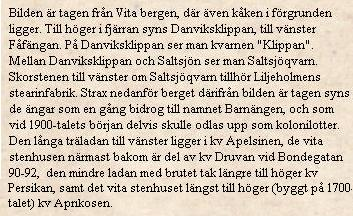
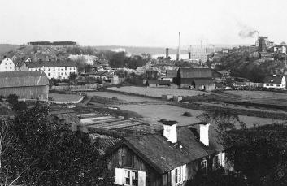
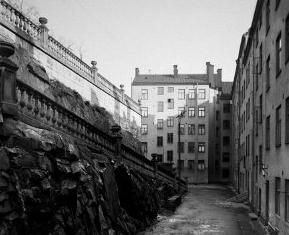
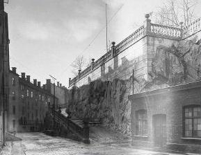
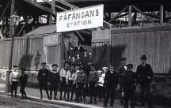
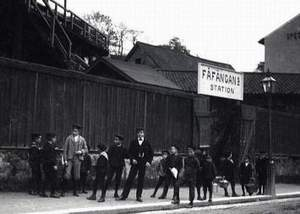
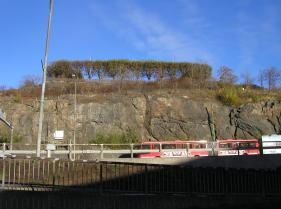
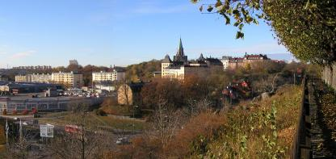

Södermalm i tid och rum. Stockholm
Liljeholmens Stearinfabrik Från CD:n Söder i våra hjärtan


Danviksgatan 10 och 11-15 (arbetarbostäder) Arbetarbostäder, Danviksgatan 3-9 Arbetarbostäder, Danviksgatan 11-15 Interiör af enkelrum för 2:ne arbeterskor. 1900-09 Interiör af enkelrum för 2:ne arbeterskor. 1900-09 Lekplats för arbetarnas barn

Danviksgatan 11-15, gården från väster. 1913. Ovanför räcket till vänster gick Saltsjöbadsbanan nedanför Fåfängan.

Vy av gården västerut. Närmast till vänster Danviksgatan 13.
|
  Fåfängans station strax söder om Fåfängan, således ovanför balustraden på bilderna ovan. Den öppnades som provisorium i juli 1893 och lades ned i april 1906. Biljettförsäljning pågick till september 1899. Fåfängans station strax söder om Fåfängan, således ovanför balustraden på bilderna ovan. Den öppnades som provisorium i juli 1893 och lades ned i april 1906. Biljettförsäljning pågick till september 1899.
|
 
|
|
 Bilden tagen i oktober 2003 med ryggen ungefär mot balustraden på bilderna ovan. |
  Från Fåfängan mot sydväst. Nedanför sluttningen till vänster låg Liljeholmens Stearinfabrik och arbetarbostäderna på bilderna ovan. De röda kåkarna till höger om bildens mitt ligger i Kvastmakarbacken och de gula huset till vänster om mitten är Gröna gården. Från Fåfängan mot sydväst. Nedanför sluttningen till vänster låg Liljeholmens Stearinfabrik och arbetarbostäderna på bilderna ovan. De röda kåkarna till höger om bildens mitt ligger i Kvastmakarbacken och de gula huset till vänster om mitten är Gröna gården.
|